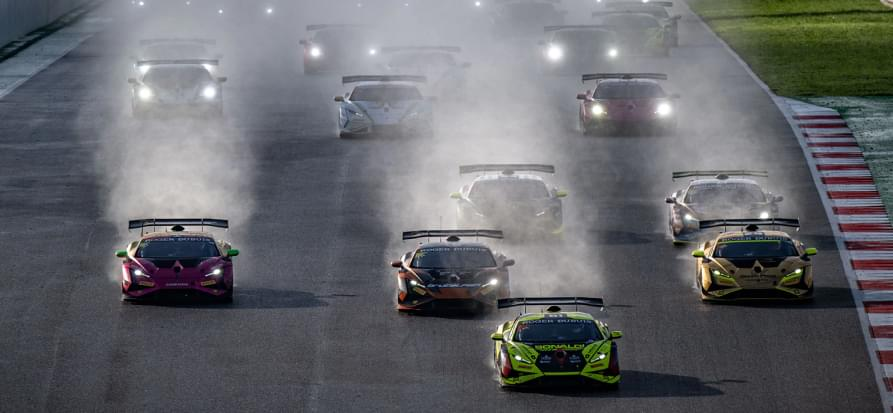
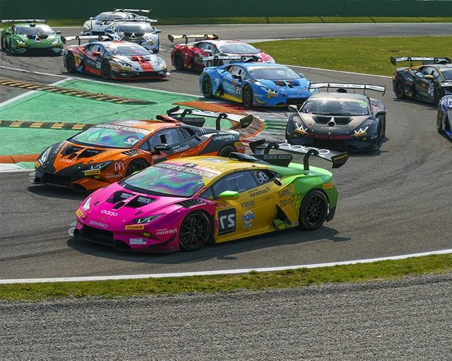

<div class="events section__paddings">
  <div class="container__small">
    <div class="events__inner">
      <div class="events__first">
        <h3 class="events__title events__first-title">
          СУПЕР ТРОФЕО МИРОВОЙ ФИНАЛ
        </h3>
        <div class="events__first-desc">
          <p class="events__text">
            Мировой финал Lamborghini завершает каждый сезон Super Trofeo с 2013
            года. Каждый год гонщики всех континентальных чемпионатов
            отправляются на разные трассы и принимают участие в двух 50-минутных
            спринтерских гонках, где определяется победитель в общем зачете. как
            чемпион мира Lamborghini. Мировой финал Lamborghini — это не только
            крупнейший гоночный уик-энд года, но и настоящий фестиваль
            автоспорта, который привлекает поклонников со всего мира.
          </p>
          <p class="events__text events__text-bold">
            Парад владельцев, превью и развлечения в паддоке для болельщиков —
            это лишь некоторые из мероприятий, организованных в рамках
            мероприятия.
          </p>
        </div>

        <picture class="events__first-picture">
          <source
            type="image/avif"
            srcset="
              ../images/events__first-img@1x.avif 1x,
              ../images/events__first-img@2x.avif 2x
            "
          />
          <source
            type="image/webp"
            srcset="
              ../images/events__first-img@1x.webp 1x,
              ../images/events__first-img@2x.webp 2x
            "
          />
          
        </picture>
      </div>

      <div class="events__second">
        <div class="events__second-desc">
          <h3 class="events__title events__second-title">
            КОМАНДЫ СУПЕР ТРОФЕО
          </h3>
          <p class="events__text">
            Все автомобили, которые участвуют в чемпионатах Lamborghini Super
            Trofeo, управляются частными командами, которые используют свой опыт
            для тонкой настройки их для водителей. Для каждого континентального
            чемпионата Lamborghini Super Trofeo существуют рейтинги пилотов и
            команд.
          </p>
          <p class="events__text">
            Пилоты и команды, участвующие в континентальной серии, каждый год
            соревнуются друг с другом в Гранд Финале Lamborghini, мероприятии,
            которое завершает спортивный сезон Super Trofeo. Две
            квалификационные сессии и две гонки определяют чемпионов мира серии.
            Каждый год Гранд-финал проводится на разных трассах, и в прошлых
            выпусках он уже затрагивал европейский, азиатский и американский
            континенты.
          </p>
        </div>

        <picture class="events__second-picture">
          <source
            type="image/avif"
            srcset="
              ../images/events__second-img@1x.avif 1x,
              ../images/events__second-img@2x.avif 2x
            "
          />
          <source
            type="image/webp"
            srcset="
              ../images/events__second-img@1x.webp 1x,
              ../images/events__second-img@2x.webp 2x
            "
          />
          
        </picture>
      </div>

      <div class="events__calendar">
        <div class="events__calendar-desc">
          <h3 class="events__title events__calendar-title">
            Календарь сезона Super Trofeo Europe 2022 года
          </h3>
          <p class="events__text">
            14 в истории серии GT, посвященный автомобилям Lamborghini Huracan
            Super Trofeo Evo. Шесть этапов, в общей сложности 12 гонок и 600
            минут соревнований будут разыграны на некоторых из самых престижных
            трасс Европы.
          </p>
        </div>

        <ul class="events__calendar-list">
          <li class="events__calendar-list-item">
            <div class="events__calendar-list-item__stage">Этап 1: </div>
            <div class="events__calendar-list-item__location">Имола (Италия)</div>
            <div class="events__calendar-list-item__date">1-3 апреля</div>
          </li>
          <li class="events__calendar-list-item">
            <div class="events__calendar-list-item__stage">Этап 2:</div>
            <div class="events__calendar-list-item__location">Ле-Кастелле (Франция)</div>
            <div class="events__calendar-list-item__date">3–5 июня</div>
          </li>
          <li class="events__calendar-list-item">
            <div class="events__calendar-list-item__stage">Этап 3:</div>
            <div class="events__calendar-list-item__location">Мизано (Италия)</div>
            <div class="events__calendar-list-item__date">1–3 июля</div>
          </li>
          <li class="events__calendar-list-item">
            <div class="events__calendar-list-item__stage">Этап 4:</div>
            <div class="events__calendar-list-item__location">Спа-Франкоршам (Бельгия)</div>
            <div class="events__calendar-list-item__date">29–30 июля</div>
          </li>
          <li class="events__calendar-list-item">
            <div class="events__calendar-list-item__stage">Этап 5:</div>
            <div class="events__calendar-list-item__location">Барселона (Испания)</div>
            <div class="events__calendar-list-item__date">30 сентября–2 октября</div>
          </li>
          <li class="events__calendar-list-item">
            <div class="events__calendar-list-item__stage">Этап 6:</div>
            <div class="events__calendar-list-item__location">Портимао (Португалия)</div>
            <div class="events__calendar-list-item__date">3-4 ноября</div>
          </li>
          <li class="events__calendar-list-item">
            <div class="events__calendar-list-item__stage">Гранд-финал 2022 :</div>
            <div class="events__calendar-list-item__location">Портимао (Португалия)</div>
            <div class="events__calendar-list-item__date">5-6 ноября</div>
          </li>
        </ul>
      </div>
    </div>
  </div>
</div>
